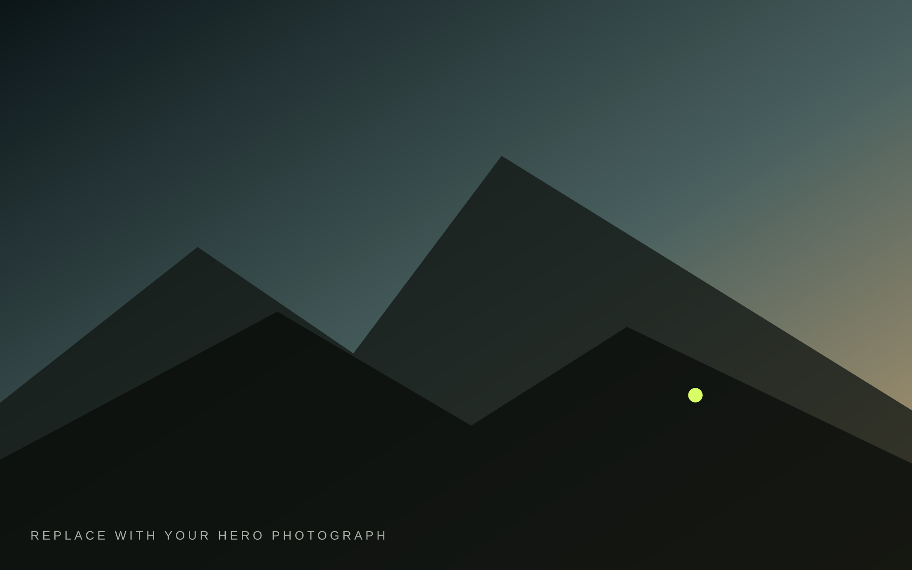
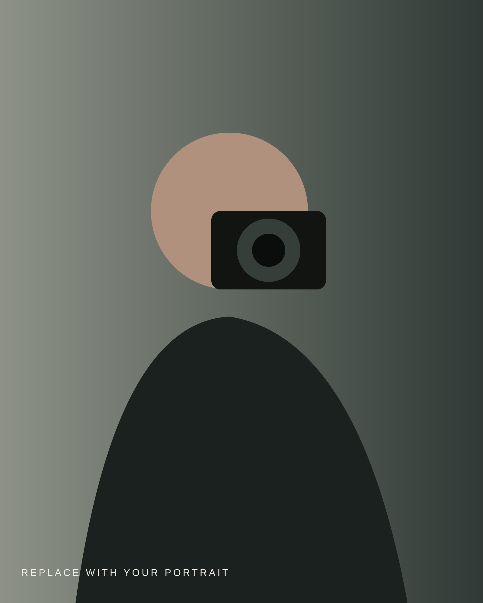
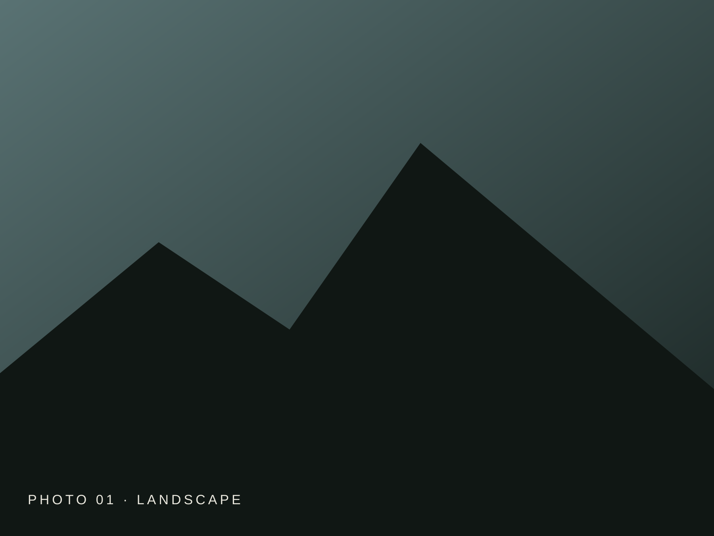

01
Still / Moving
Street observations, passing gestures and the rhythm of ordinary days.
View photographs
Iuliana-Maria Burz · Photography
Places / People / Passing light
The practice
Photography is where I slow down and look closer—at places, people, and the small moments that might otherwise pass unnoticed.
Portfolio

About Iuliana-Maria
I’m Iuliana-Maria Burz. I work in technology, where my days are shaped by systems, structure and precise solutions. Photography gives me another way to pay attention—slower, more intuitive, and led by curiosity.
This is a growing collection of personal photographs: places I return to, people I meet, and fragments of everyday life held in light.
Work with meOngoing stories
A home for longer photographic stories—series that grow over time rather than ending in a single frame.
Coming next
Until the shop opens, ask about a photograph, a print size, or editorial licensing directly.
Ask about printsGet in touch
For commissions, collaborations, print questions or licensing enquiries.
hello@yourdomain.com